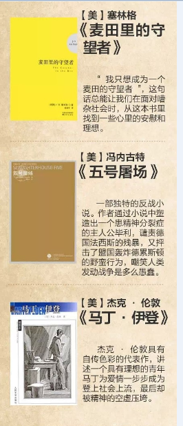

当前位置：首页 > 精品推荐
名书推荐

推荐目录
- 人类思想史上第一个乌托邦方案——柏拉图的《理想国》2016-03-15
- 剥削阶级政治学体系的发端——亚里士多德的《政治学》2016-03-15
- 首先摆脱神学的政治学——马基雅维里的《君主论》2016-03-15
- 空想社会主义的奠基之作——托马斯·莫尔的《乌托邦》2016-03-15
- 三权分立说从此始——孟德斯鸠的《论法的精神》2016-03-15
- 展示新兴资产阶级的身影——笛福的《鲁滨逊漂流记》2016-03-15
- 一个真诚的人道主义者的文学——雨果的《悲惨世界》2016-03-15
- 结构宏伟的史诗性巨著——托尔斯泰的《战争与和平》2016-03-15
- 第一部社会主义现实主义作品——高尔基的《母亲》2016-03-15
- 尺有所短，寸有所长——米切尔的《飘》2016-03-15
- 物竞天择，适者生存——达尔文的《物种起源》2016-03-15
- 矛盾心理下的矛盾人物——屠格涅夫的《父与子》2016-03-15
- 阿拉伯民间文学的奇葩——《一千零一夜》2016-03-15
- 世界上流传最广的书——《圣经》 2016-03-15
- 纳粹主义宣言——希特勒的《我的奋斗》2016-03-15
热门书籍
追风筝的人
麦田里的守望者

乱世佳人